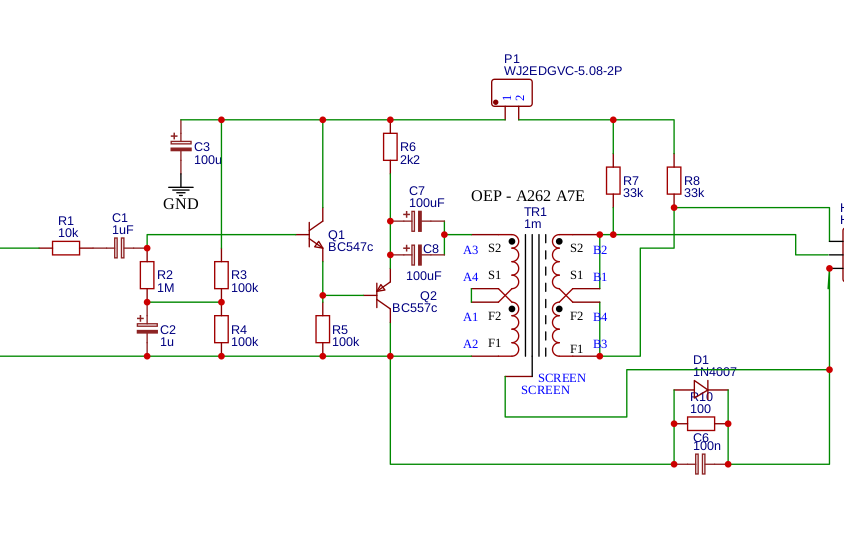
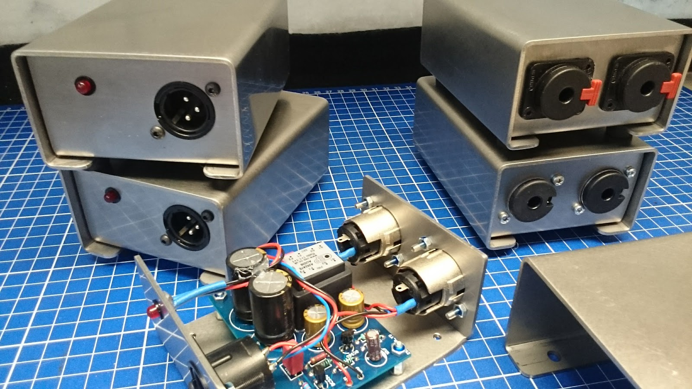
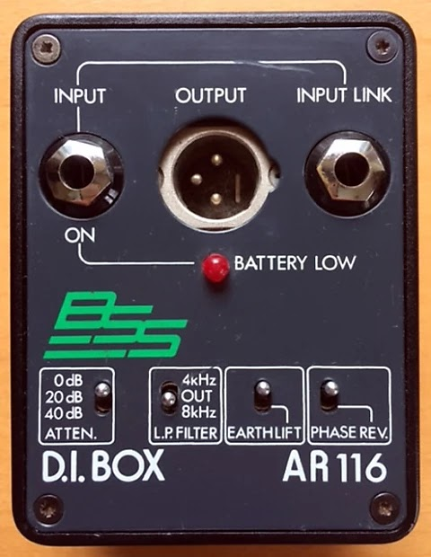
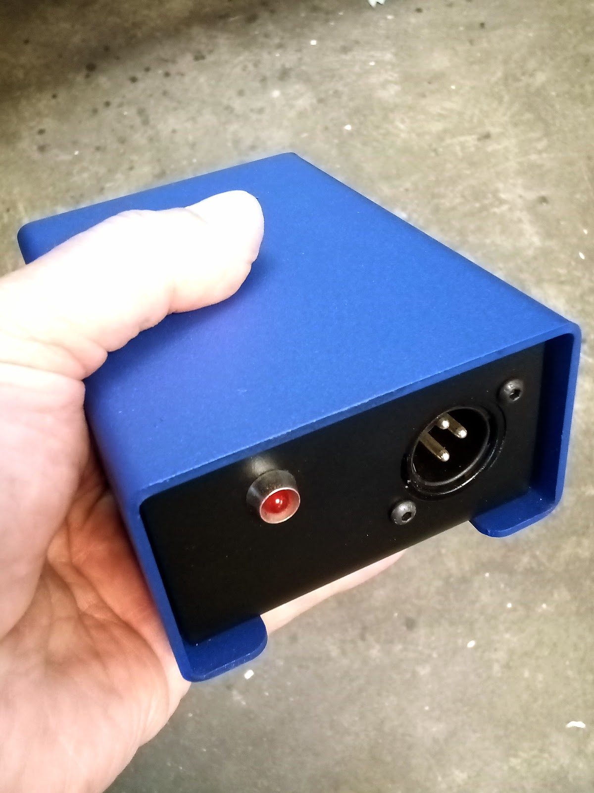

On the bench is a batch of stainless-steel DI boxes, a box of OEP transformers and a phantom-power problem that will not go away. This is the latest round in a decades-long DI habit.
Over the past decades, making a DI box has been one of my recurring activities, from repurposing scavenged transformers into makeshift "passive" boxes to experiments with unbalanced-to-balanced chips. The problem is phantom supply.
Although rated at 48 volts, its purpose as a PSU for any circuitry is really limited, because of the way it is implemented in almost every mic preamplifier. The 48 volts is fed through two resistors of 6k8 each, one in each leg of the symmetrical input, giving an impedance of 3k4. That means if your circuit draws, say, 10 mA, only 14 volts of that supply is left to begin with. Your own circuit will have some resistors in the supply lines too, to unload the output from your circuit. So the voltage to work with, and thus the headroom of your DI, will drop even more.


Hence the really limited headroom of a lot of modern, commercial DI boxes.
Old-school electronics to the rescue
This circuit is no rocket science and is well known in every pro-audio circle, mostly credited to Bo Hansen. Quite a few mods, though. Just as a reminder for myself, here is a picture of the early limited prototype (only 20 pieces of that specific transformer in my very old stock):

By popular demand we decided to try a reissue fairly recently. The problem was finding a nice, affordable transformer. These Swedish ones are really nice, but man, do they charge. Pure by coincidence I stumbled across OEP. Now, those I do remember from the classic BSS AR116 DI. (Which has nothing to do with the modern AR133!) And with some Googling I found them to be used by modern Telefunken as well — speaking of brand-name marketing!
So here we go: a batch of class A, current-driven, transformer-balanced DIs in a stainless-steel housing. Yes, stainless steel. Every DI gets abused once in a while as a stage weight, box tilt or even as a hammer, so to prevent them from changing into ugly lumps of corroded, dented metal, we folded and water-jet-cut some stainless-steel sheets. Of course I didn't do it by myself: credits to Koos Roadservice.




Still not totally satisfied with the end result, I learned how to powder coat (not difficult at all). So here it is: open for orders now... hahahaha...

